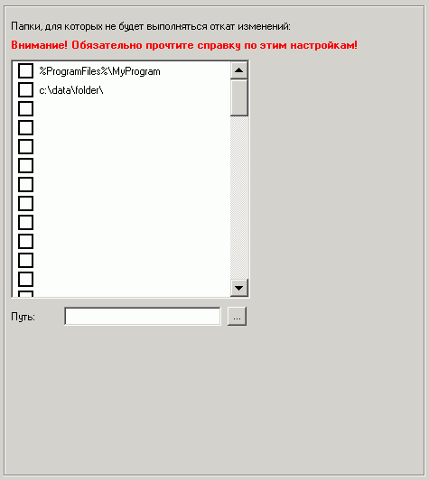

| Rollback (ќткат): »сключени€ |

«десь можно указать папки-исключени€, дл€ которых не будет выполн€тьс€ авто-восстановление после каждой перезагрузки (откат) и все изменени€ внутри них будут сохран€тьс€.
≈сли указан путь на диске, дл€ которого не включен откат, то смысла это иметь не будет.
¬ пут€х можно использовать переменные окружени€ вида %переменна€%, однако нельз€ использовать переменные, специфические дл€ конкретного пользовател€ системы, т.к. данные настройки примен€ютс€ к компьютеру, а не пользователю.
Ќапример, можно использовать %SystemDrive%, но нельз€ использовать %UserProfile%.
¬ажно! —уществует ограничение при указании пути на диске, отличном от системного (обычно C:). ≈сли, например, указан путь D:\data\, то это будет означать, что и на диске E:\ дл€ папки \data\ будут сохран€тьс€ изменени€.
ак решение данной проблемы можно рекомендовать не использовать папки-исключени€ с одинаковыми именами в случае установки отката на 2 и более логических дисков.
≈сли откат уже включен и активен на клиентских машинах и вы желаете внести изменени€ на этой странице, то после их сохранени€ необходимо отключить откат на две перезагрузки с сохранением изменений через программу оператора!
Ёто св€зано с тем, что клиентские настройки дл€ компьютера примен€ютс€ только после перезагрузки клиентской машины, а также дл€ их сохранени€ необходимо временное отключение отката. ¬ противном случае изменений не произойдет.
ѕроконтролировать текущее состо€ние отката всегда можно через программу оператора.